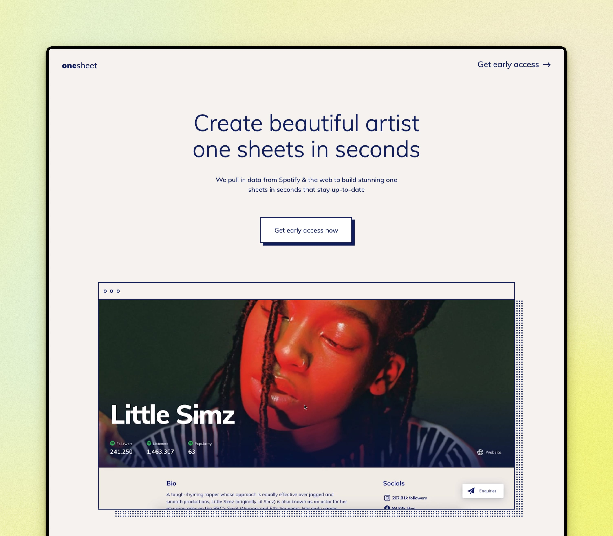

Onesheet
Generalist
2023 — 2024
What started as a side project during lockdown has since grown into a successful bootstrapped SAAS product. We continue to grow and have new features underway...
CONTEXT
From my time in the music industry I kept seeing a huge pain point for artists and labels when it came to creating onesheets. These are essentially a promo page for artists that includes streaming data, a bio, featured playlists and more. They are shared within the music industry for promo purposes, sync deals, or management updates.
They are generally cobbled together from various different data sources, with everyone manually screenshotting images into a consortium of different formats, from PDFs to word docs and slide decks. This tedious process is arduous for all involved and the worst part is that sheets instantly become out of date once shared. This means people have to do this weekly, if not more! There was such a glaring problem to solve I couldn't help but have a go. Myself and developer friend teamed up and got building.
IDEA VALIDATION
To some extent, the need for this tool had already been validated from chatting to artists and labels in the industry. But we did a quick exercise on LinkedIn to cold message (I know), various people from labels that could be interested. I built mock pages in HTML/CSS of what these screens could look like for their artists and waited to see what the response would be like (if any). The feedback was positive and we picked up a few key people to work with for feedback during development.
SPEED, SPEED, SPEED
Being uncoupled from the process of a larger product team is exhilarating. We whipped together a working prototype in a week. The core of our idea was to use APIs from various sources to build these sheets automatically and keep them updated. The main one was Chartmetric, a service that does something similar but is focused on internal use for teams. This gave us a huge chunk of streaming data to work with. Alongside this, we used Spotify's API for artist search and featured playlists, Bands In Town for live shows, and Bing for artist images and news. We used an off-the-shelf open source CMS to allow users to manage and organise content. I designed the pages in Webflow and exported the code for use on the front end. The early designs were rough to say the least, but they got us up and running with a POC fast.

First iteration of the user dashboard

A quickly designed landing page